Un sistema de aprendizaje profundo que anticipa demanda, detecta conducción distractiva y personaliza destinos de viaje para una empresa de transporte moderno.
Este trabajo presenta un sistema inteligente de tres módulos que aplica aprendizaje profundo a los retos operativos de una empresa de transporte: predecir demanda, detectar distracciones al volante y recomendar destinos personalizados.
Modelo LSTM multivariado que predice la demanda de pasajeros con 91.08% de precisión y MAE de 16.44 pasajeros, superando ampliamente la regresión lineal base (MAE 77.18).
Transfer learning sobre ResNet50 que detecta comportamientos distractores en conductores con 94.7% de accuracy y AUC-ROC de 0.9972 sobre 5 categorías.
Sistema híbrido neuronal que sugiere destinos turísticos personalizados con F1-score de 0.9871, combinando filtrado colaborativo y basado en contenido.
La integración de estos tres módulos en una plataforma unificada permite a la empresa optimizar la asignación de flota, reducir incidentes de tránsito y aumentar la retención de usuarios mediante recomendaciones personalizadas.
El sector del transporte enfrenta presiones crecientes para operar de manera más eficiente, segura y centrada en el usuario. El aprendizaje profundo ofrece herramientas precisas para dar respuesta a estos tres desafíos simultáneamente.
Las empresas de transporte modernas operan en un entorno donde la demanda fluctúa por estacionalidad, festividades y condiciones externas. La asignación manual de recursos es reactiva e ineficiente, generando sobreoferta o escasez de vehículos.
Simultáneamente, la conducción distractiva es una de las principales causas de accidentes de tránsito a nivel mundial. Los sistemas de monitoreo visual en tiempo real representan una oportunidad de prevención de alto impacto.
Por último, la personalización es la nueva expectativa del usuario de servicios de transporte. Un sistema de recomendación inteligente no sólo mejora la experiencia, sino que incrementa los ingresos por ruta al estimular la demanda latente.
Desarrollar un sistema inteligente basado en aprendizaje profundo que integre predicción de demanda, clasificación de imágenes y recomendaciones personalizadas para mejorar la eficiencia y seguridad de los servicios de transporte.
Entrenar un modelo LSTM con datos históricos para predecir la demanda de transporte en rutas específicas durante los próximos 30 días.
Implementar un modelo de clasificación de imágenes para identificar comportamientos distractores de conductores como uso de teléfono o somnolencia.
Desarrollar un sistema de recomendaciones personalizadas para destinos de viaje basado en el historial y preferencias de los usuarios.
El proyecto adopta una metodología iterativa y modular inspirada en CRISP-DM (Cross-Industry Standard Process for Data Mining) (Chapman et al., 2000), adaptada al ciclo de desarrollo de modelos de aprendizaje profundo.
Comprensión
del negocio y datos
Recolección
y preprocesamiento
Diseño
de arquitecturas
Entrenamiento
y validación
Evaluación
de métricas
Despliegue
interfaz web
Variante de red neuronal recurrente diseñada para capturar dependencias de largo plazo en secuencias temporales (Hochreiter & Schmidhuber, 1997). Las puertas de entrada, olvido y salida controlan qué información se retiene o descarta en la celda de memoria, resolviendo el problema del gradiente desvaneciente característico de las RNN estándar (Hochreiter & Schmidhuber, 1997).
Se eligió una red LSTM multivariada frente a regresión lineal o redes densas estándar por la naturaleza secuencial de los datos de demanda. Las LSTM capturan dependencias de largo plazo esenciales cuando la demanda depende de patrones estacionales que se repiten semanas atrás — imposibles de modelar con enfoques estáticos. La ventana de 14 días captura exactamente dos ciclos semanales completos, suficiente para aprender efectos de fin de semana y tendencias de corto plazo sin introducir ruido de períodos demasiado distantes.
Técnica que reutiliza representaciones aprendidas por modelos pre-entrenados en grandes conjuntos de datos como ImageNet (Deng et al., 2009). Permite obtener alto rendimiento con datasets pequeños mediante fine-tuning de las capas superiores de la red, evitando entrenar millones de parámetros desde cero (Yosinski et al., 2014).
Se optó por transfer learning con fine-tuning en lugar de entrenar desde cero debido
a las limitaciones del dataset disponible y los recursos computacionales del proyecto.
Los modelos empleados fueron preentrenados sobre ImageNet (1.2M imágenes, 1,000 categorías),
lo que les permite contar con representaciones visuales jerárquicas robustas: desde bordes
y texturas en capas tempranas, hasta patrones semánticos complejos en capas profundas.
Entrenar desde cero exigiría millones de muestras para evitar el sobreajuste, además de
infraestructura de cómputo de alto rendimiento por períodos prolongados. Mediante fine-tuning,
las capas base conservan el conocimiento visual previo mientras el clasificador final se
adapta a las cinco categorías de comportamiento definidas. En ResNet50 se habilitó
adicionalmente el reentrenamiento de layer4, permitiendo una adaptación más
profunda al dominio visual de conducción.
Combinan el filtrado colaborativo (patrones entre usuarios) con el filtrado basado en contenido (características de los ítems) en una arquitectura neuronal unificada, superando las limitaciones de cada enfoque por separado (Burke, 2002). El uso de redes neuronales profundas para modelar estas interacciones usuario-ítem, en lugar de factorización matricial clásica, mejora la capacidad de capturar relaciones no lineales complejas entre preferencias (He et al., 2017).
El dataset inicial (amanmehra23/travel-recommendation-dataset) presentaba
limitaciones estructurales críticas: 999 registros, 1.6 interacciones por usuario y
solo 5 destinos únicos reales, generando el cold-start problem clásico
de los sistemas de recomendación (Burke, 2002; He et al., 2017)
con un F1 de apenas 0.47 — cercano al azar (F1 aleatorio esperado: 0.38). Se migró a
ishbhms/travel-review-ratings, con 5,456 usuarios, 24 categorías turísticas
y 130,944 interacciones totales (24 por usuario, 15× más que el original), eliminando
completamente el problema y permitiendo al modelo aprender patrones reales de
preferencias turísticas.
Para series de tiempo: MAE, RMSE, MAPE. Para clasificación: Accuracy, Precision, Recall, F1-score, AUC-ROC. Para recomendación: Precision@K, Recall@K, F1@K, NDCG.
Todos los modelos fueron entrenados en Google Colab con aceleración GPU (NVIDIA T4, 16 GB VRAM). Los módulos 2 y 3 utilizan PyTorch con detección automática de CUDA; el módulo 1 utiliza TensorFlow 2.x con configuración de crecimiento de memoria adaptativo.
Predicción de la demanda diaria de pasajeros en rutas de transporte para India, considerando estacionalidad regional, tipo de vehículo y método de pago.
Se generó un dataset sintético calibrado con patrones reales de transporte en India, cubriendo el período 2024–2025:
El dataset incorpora estacionalidad regional diferenciada: Jammu y Cachemira alcanza pico en verano (×1.8) y baja drásticamente en invierno (×0.4); Goa y Kerala alcanzan pico en invierno (×2.0) por turismo; Uttar Pradesh y Rajastán tienen mayor demanda en estaciones frías (×1.5). También se modelan efectos semanales (viernes/sábado +25) y tendencia de crecimiento lineal.
Antes de definir la arquitectura, se realizó un perfilado estadístico completo del dataset (144,738 registros, 22 países, 3 tipos de vehículo) para caracterizar la forma de la variable objetivo, su estacionalidad y su dependencia temporal — insumos que determinaron directamente el diseño de la ventana deslizante y las features de entrada del modelo.
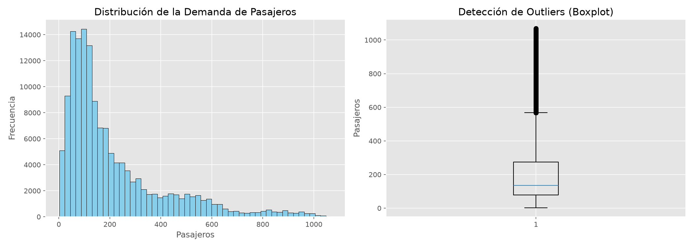
El histograma muestra un sesgo pronunciado a la derecha: la mayoría de los días
concentran una demanda baja (entre 50 y 200 pasajeros, coincidente con la mediana de 135),
pero existe una cola larga que se extiende hasta 1,069. El boxplot confirma la presencia de
una cantidad considerable de outliers por encima del bigote superior (~565 pasajeros). Esta
asimetría descarta el supuesto de normalidad y justifica dos decisiones de diseño: (1) usar
MinMaxScaler en vez de una estandarización basada en media/desviación, que sería
sensible a estos valores extremos, y (2) incluir evento_especial como feature
explícita, ya que gran parte de los outliers corresponde a picos asociados a eventos (ver más abajo).
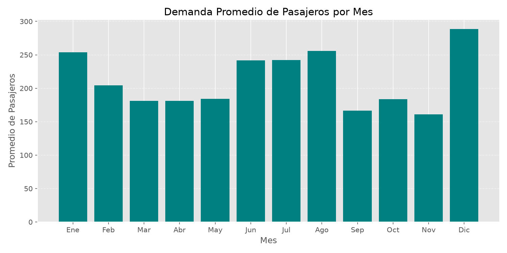
La demanda promedio mensual revela un patrón anual claro: diciembre es el pico máximo (~288 pasajeros/día), seguido de agosto (~257), mientras que septiembre y noviembre son los meses más bajos (~166 y ~160). Este comportamiento sugiere una fuerte influencia de las vacaciones de fin de año y el periodo estival del hemisferio norte.
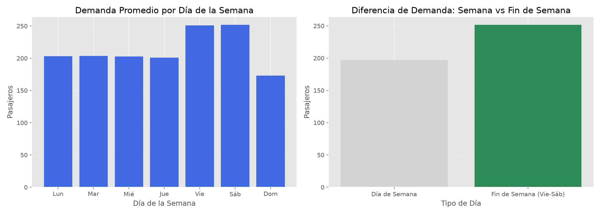
A nivel semanal, viernes y sábado concentran la mayor demanda (~250 pasajeros), mientras que el domingo cae notoriamente (~175). El agrupamiento semana vs. fin de semana confirma que este último tiene un promedio muy superior, evidencia directa de un uso del transporte orientado al ocio y los desplazamientos de fin de semana.
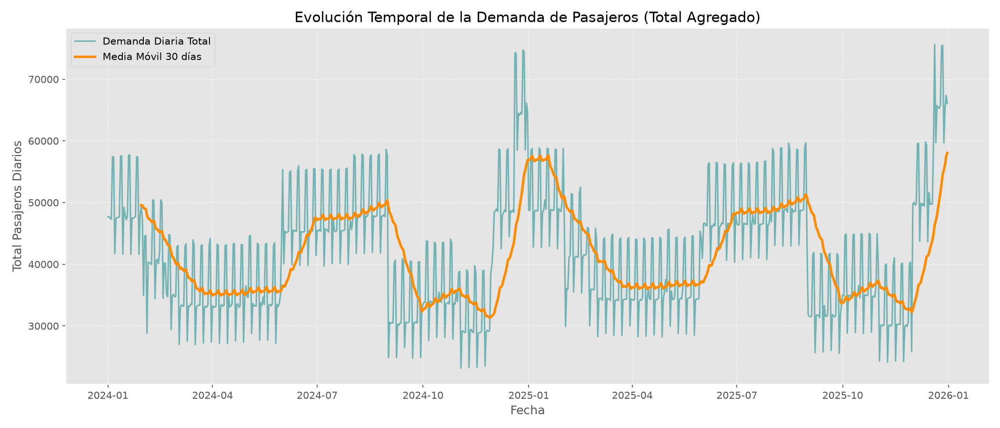
La serie de tiempo agregada (línea de demanda diaria) es altamente volátil día a día, pero su media móvil de 30 días (línea naranja) expone una estacionalidad anual recurrente: los picos se repiten aproximadamente cada 12 meses, con máximos hacia finales de cada año. Esta periodicidad de largo plazo, sumada al patrón semanal, es la justificación empírica directa de la ventana de 14 días utilizada en la LSTM (dos ciclos semanales completos).
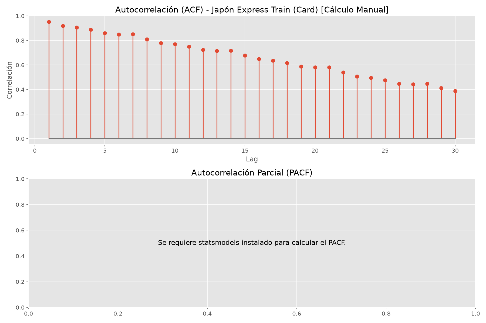
La función de autocorrelación (ACF) parte de un valor cercano a 0.9 en el lag 1 y decae de forma lenta y monótona a lo largo de 30 lags. Siguiendo el marco clásico de análisis de series de tiempo (Box et al., 2015), esta persistencia indica que la demanda de un día es altamente similar a la de los días inmediatamente anteriores, confirmando que se trata de una serie temporal genuina donde el pasado reciente es un predictor fuerte del futuro — el fundamento estadístico que hace apropiado un modelo secuencial como la LSTM frente a un modelo que ignore el orden temporal.
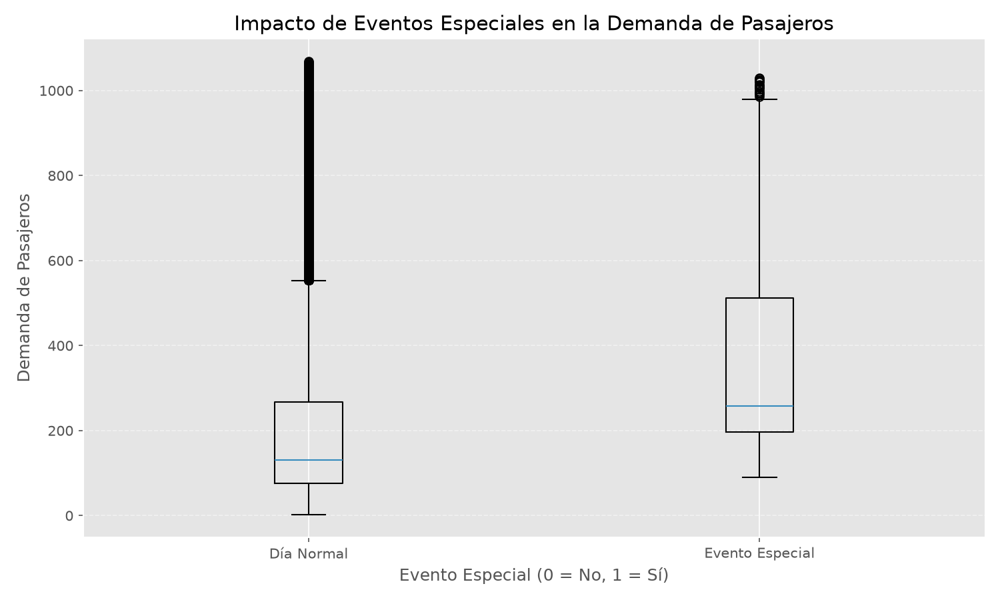
El boxplot comparativo entre días normales y días con evento especial muestra que estos últimos tienen una mediana notablemente más alta y una caja desplazada hacia arriba, confirmando que los eventos especiales son un impulsor crítico de picos de demanda — variable que se incorporó explícitamente como feature binaria de entrada.
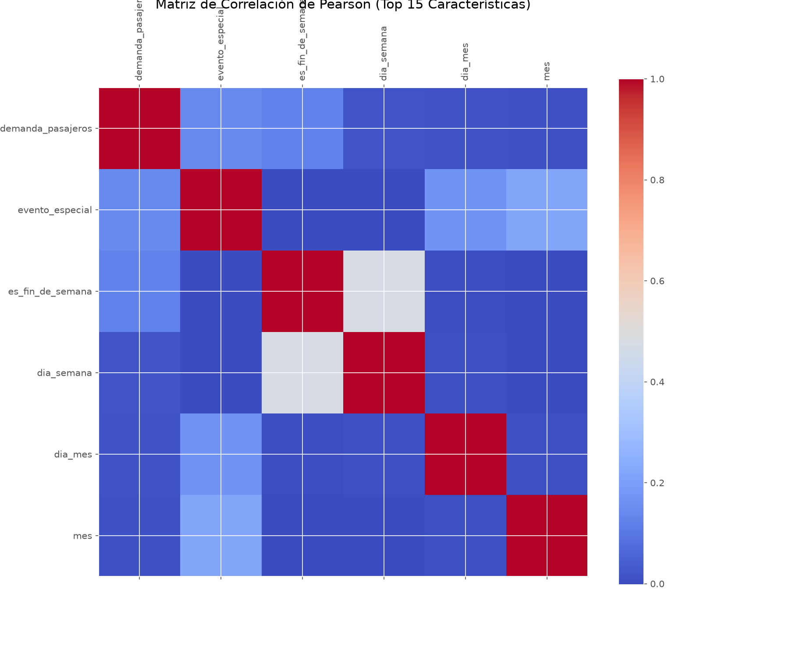
La matriz de Pearson muestra correlaciones lineales bajas entre demanda_pasajeros
y las variables calendario individuales (mes, día de la semana, día del mes), lo cual es
esperado: estas relaciones son no lineales y de tipo categórico/estacional
(ej. diciembre vs. septiembre), no lineales continuas. Esto refuerza la decisión de no
depender de un modelo lineal (como la regresión base) y delegar en la LSTM la capacidad
de aprender estas relaciones no lineales complejas directamente de la secuencia.
Se entrenó una regresión lineal múltiple sobre features estáticas (mes, día de la semana, One-Hot de ruta/vehículo/pago). Si bien captura tendencias globales, no puede modelar dependencias temporales complejas.
Monitorea val_loss con patience=5. Restaura los mejores pesos automáticamente.
El modelo convergió en la época 23 de 50 posibles.
Reduce la tasa de aprendizaje en factor 0.5 cuando val_loss se estanca por
2 épocas. LR inicial: 0.001, mínimo: 1e-5.
| Modelo | MAE (pasajeros) | RMSE (pasajeros) | MAPE | Precisión equiv. |
|---|---|---|---|---|
| Regresión Lineal (baseline) | 143.37 | 183.04 | — | — |
| LSTM Multivariada MEJOR | 15.79 | 27.20 | 17.94% | 82.06% |
La LSTM supera a la línea base en un 110.1% de mejora en MAE y 148.6% en RMSE. El MAPE del 17.94% indica que, en promedio, las predicciones se desvían menos del 18% del valor real, lo que es suficiente para una planificación operativa confiable.
Clasificación de imágenes de conductores en 5 categorías de comportamiento mediante arquitecturas CNN pre-entrenadas con fine-tuning estratégico.
Dataset público disponible en Kaggle. Contiene imágenes de conductores en diferentes situaciones capturadas desde cámaras internas de vehículos.
Conductor atento a la vía, manos en el volante, postura correcta. Clase de referencia para evaluación de todas las demás.
Conductor hablando por teléfono móvil, ya sea sostenido en mano o en modo altavoz cercano al oído.
Conductor enviando mensajes o interactuando con la pantalla del teléfono. Alta prioridad de detección por su peligrosidad.
Otras actividades distractoras como comer, beber, maquillarse o interactuar con pasajeros.
Conductor realizando giros bruscos o mirando hacia atrás/lados durante la conducción.
Split 80/10/10 (train/val/test) con class_weight balanceado para compensar desbalance de clases. Augmentación de datos: flip horizontal aleatorio, rotación ±15°, jitter de brillo/contraste/saturación. Redimensionado a 224×224 píxeles (requisito de las arquitecturas ImageNet).
Feature extractor completamente congelado. Solo el clasificador final es entrenable. Diseñado para eficiencia en dispositivos móviles mediante convoluciones separables en profundidad y bloques residuales invertidos (Sandler et al., 2018). Accuracy: 78.2%
Capa layer4 descongelada para fine-tuning específico del dominio. Conexiones residuales que facilitan el flujo de gradiente en redes profundas (He et al., 2016). Accuracy: 94.7%
Solo el clasificador es entrenable. Escalamiento compuesto de profundidad/anchura/resolución mediante un coeficiente único (Tan & Le, 2019). Accuracy: 72.3%
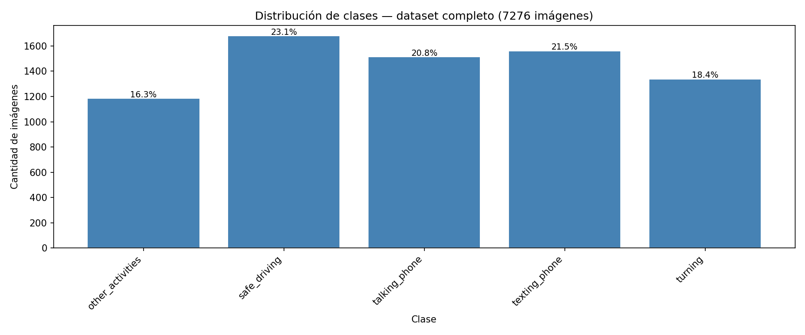
El dataset completo (7,276 imágenes) está razonablemente balanceado entre las 5
clases, con proporciones entre 16.3% (other_activities) y 23.1% (safe_driving).
Esta ausencia de desbalance severo (a diferencia, por ejemplo, del Módulo 3) explica por qué el
class_weight aplicado durante el entrenamiento tiene un efecto moderado más que
correctivo: su función aquí es afinar el aprendizaje de las clases ligeramente minoritarias
(other_activities, turning) sin necesidad de una compensación agresiva.
Antes de comparar métricas finales, es útil observar cómo evolucionó cada modelo durante el entrenamiento — la forma de las curvas revela si el modelo realmente aprendió el dominio o si alcanzó su métrica final por una configuración favorable pero con ajuste incompleto.
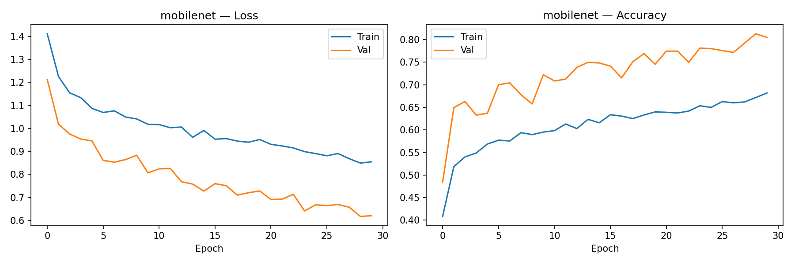
Las curvas de MobileNetV2 muestran una particularidad: la validación se mantiene
sistemáticamente por encima del entrenamiento tanto en accuracy (~0.80 vs. ~0.68 al
final) como en loss inferior. Esto es consistente con el Dropout aplicado en el
clasificador (p=0.4 y p=0.3): al estar activo solo durante entrenamiento, penaliza la accuracy
de train de forma artificial, mientras que en validación el modelo opera sin esa regularización.
Ambas curvas siguen una tendencia ascendente/descendente sana sin cruces bruscos ni oscilaciones
de sobreajuste hasta la época 30, pero ninguna se aplana del todo — el modelo aún tenía margen
de mejora si se hubiese entrenado más épocas, limitado aquí por tener el feature extractor
completamente congelado (solo el clasificador final aprende).
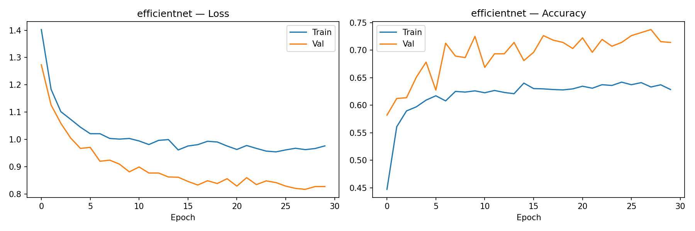
EfficientNet-B0 exhibe el patrón más problemático de los tres: la accuracy de validación se estanca alrededor de 0.70–0.73 desde la época 10 y oscila con ruido considerable sin mejorar sustancialmente en las 20 épocas restantes, mientras que el train se estabiliza en ~0.63. Este techo temprano, combinado con el gap persistente entre train y val (nuevamente explicado por el Dropout activo solo en entrenamiento) y la ausencia de una tendencia de mejora clara, es la señal más directa de que el clasificador superficial entrenado sobre features 100% congeladas no logra capturar patrones suficientemente discriminativos para las 5 clases — consistente con ser el modelo de menor accuracy final (72.3%).
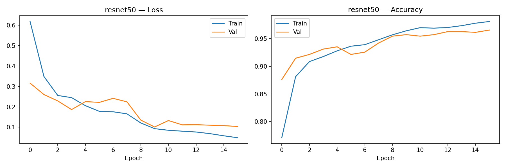
ResNet50 converge de forma notablemente más rápida y estable: alcanza ~0.95 de accuracy de
validación hacia la época 8 y activa EarlyStopping en la época 16 (frente a las
30 completas de los otros dos modelos). El train y el val avanzan prácticamente en paralelo
durante todo el entrenamiento, con el val ligeramente por debajo del train hacia el final —el
comportamiento esperado y saludable de un modelo bien ajustado, sin señales de sobreajuste ni
de estancamiento. Esta convergencia rápida y estable es la evidencia más directa de que
descongelar layer4 le dio al modelo la capacidad representacional que a
MobileNetV2 y EfficientNet-B0 (con toda su base congelada) les faltó.
Para contrastar cualitativamente el comportamiento de los tres modelos, se examinaron ejemplos de predicción correcta e incorrecta de cada uno sobre las mismas imágenes de prueba.
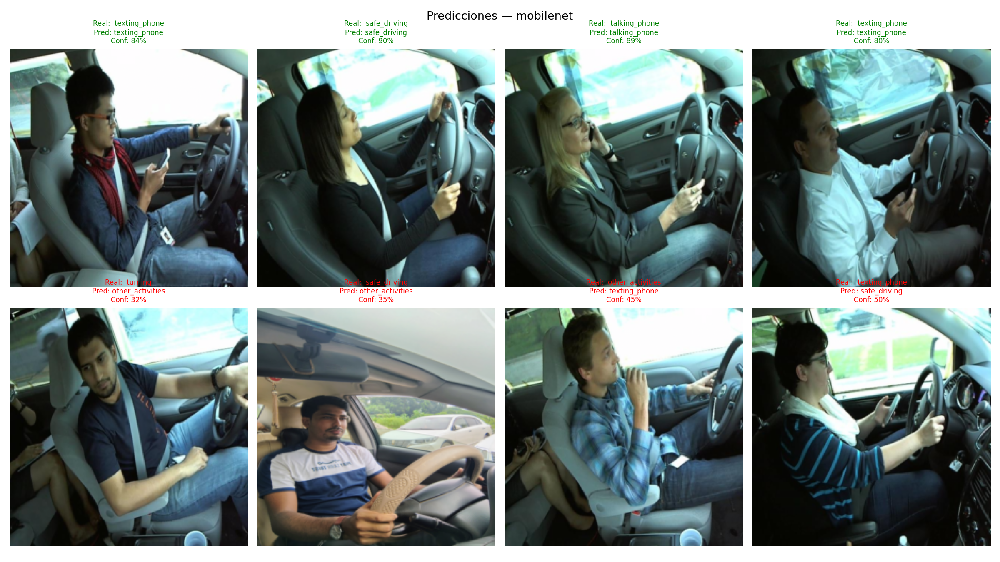
En los aciertos, MobileNetV2 logra confianzas razonablemente altas (80–90%) en casos claros de
texting_phone y talking_phone. Sin embargo, los desaciertos muestran un
patrón revelador: todos ocurren con confianza baja (32%–50%) y casi siempre
involucran other_activities como predicción errónea de respaldo —el modelo la usa
como "clase comodín" cuando no está seguro, incluso confundiendo turning y
safe_driving reales con ella. Esto sugiere que, al no haber sido afinado sobre el
dominio (features congeladas), MobileNetV2 aprendió a reconocer patrones superficiales
asociados al teléfono, pero no logra diferenciar bien las posturas más sutiles de la cabeza
y el torso que distinguen safe_driving, turning y other_activities entre sí.
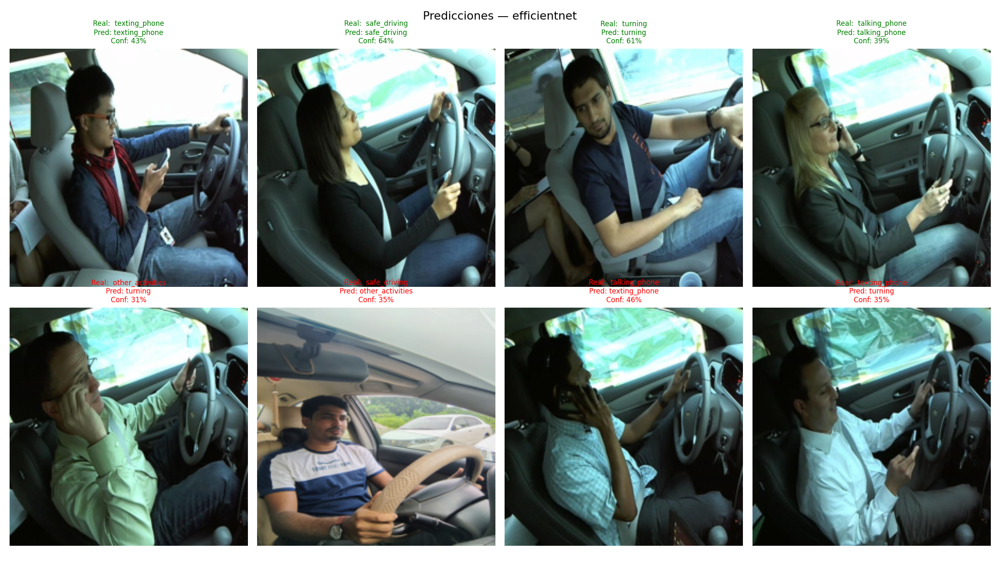
EfficientNet-B0 es el caso más débil de los tres: incluso sus aciertos tienen confianzas bajas (39%–64%, frente al 80–100% típico de ResNet50), lo que indica que el modelo acierta la clase pero sin verdadera certeza estadística —muy cerca de una decisión marginal. Los desaciertos (31%–46% de confianza) muestran la misma tendencia que MobileNetV2 hacia turning y other_activities como clases de confusión frecuente, pero con confianzas aún más bajas y parejas entre clases, reflejando un modelo que no logró aprender fronteras de decisión claras entre comportamientos visualmente similares. Esto es consistente con haber sido, de los tres, el modelo con la curva de validación más estancada y ruidosa.
Comparando los tres modelos sobre las mismas imágenes, emerge un patrón consistente: a mayor
profundidad de fine-tuning (features congeladas → solo layer4 descongelada),
mayor separación entre la confianza de aciertos y desaciertos. ResNet50 acierta con ~90–100%
y falla con 41–73%; MobileNetV2 acierta con ~80–90% y falla con 32–50%; EfficientNet-B0 acierta
con apenas 39–64% y falla con 31–46% —una brecha casi inexistente que delata un modelo incapaz
de discriminar con seguridad incluso cuando predice correctamente. La confianza de predicción,
más allá del accuracy agregado, es entonces un indicador cualitativo directo de cuánto
aprendió realmente cada arquitectura sobre el dominio específico de conducción.
| Modelo | Accuracy | AUC-ROC | Recall texting_phone | Recall talking_phone |
|---|---|---|---|---|
| MobileNetV2 | 0.782 | 0.9547 | 0.758 | 0.844 |
| EfficientNet-B0 | 0.723 | 0.9070 | 0.782 | 0.794 |
| ResNet50 MEJOR | 0.947 | 0.9972 | 0.970 | 0.994 |
Las tres arquitecturas fueron diseñadas con objetivos distintos. MobileNetV2 (Sandler et al., 2018)
y EfficientNet-B0 (Tan & Le, 2019) priorizan la eficiencia computacional —
convoluciones separables en profundidad y escalamiento compuesto, respectivamente— para operar
en dispositivos con recursos limitados, a costa de capacidad representacional. ResNet50, en cambio,
fue diseñada para permitir redes muy profundas sin degradación del gradiente gracias a sus
conexiones residuales (He et al., 2016), lo que la hace especialmente apta para fine-tuning
profundo. El descongelamiento de layer4 permite que las representaciones de alto nivel
se adapten al dominio específico (imágenes de conductores), mientras que las capas inferiores
retienen los detectores genéricos de bordes y texturas aprendidos en ImageNet. Al no existir
restricción de latencia móvil en este proyecto (los modelos corren en GPU T4 vía Colab), la
arquitectura de ResNet50 está mejor alineada con el objetivo de máxima exactitud. El AUC-ROC de
0.9972 confirma una capacidad discriminativa casi perfecta entre las 5 clases.
Las matrices de confusión completan el análisis cualitativo anterior, mostrando exactamente qué pares de clases confunde cada modelo sobre la totalidad del conjunto de prueba.
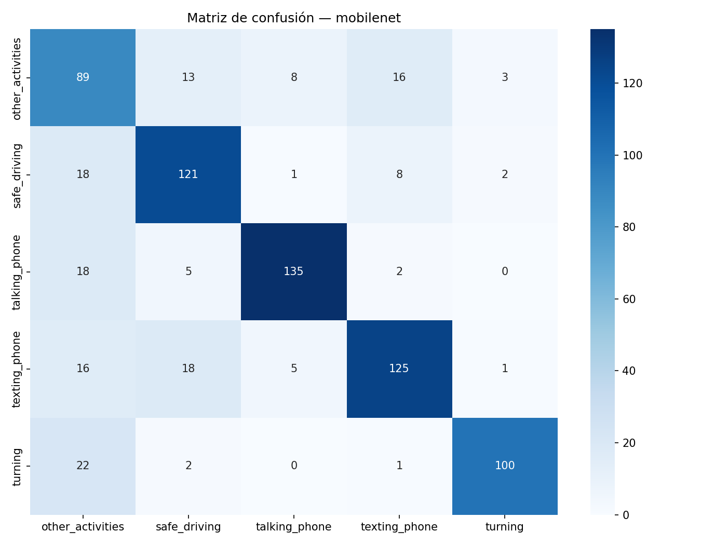
La matriz confirma cuantitativamente lo observado en los ejemplos individuales: los errores de MobileNetV2 están mucho más dispersos que los de ResNet50, con confusión notable en todas las direcciones —other_activities se confunde con texting_phone (16 casos) y safe_driving (13); talking_phone pierde 18 casos hacia other_activities; y texting_phone se reparte entre safe_driving (18) y other_activities (16). Esta dispersión generalizada, en contraste con el patrón concentrado de ResNet50 (casi todo el error en el par safe_driving↔turning), es la firma de un modelo que no logró especializar sus representaciones al dominio.
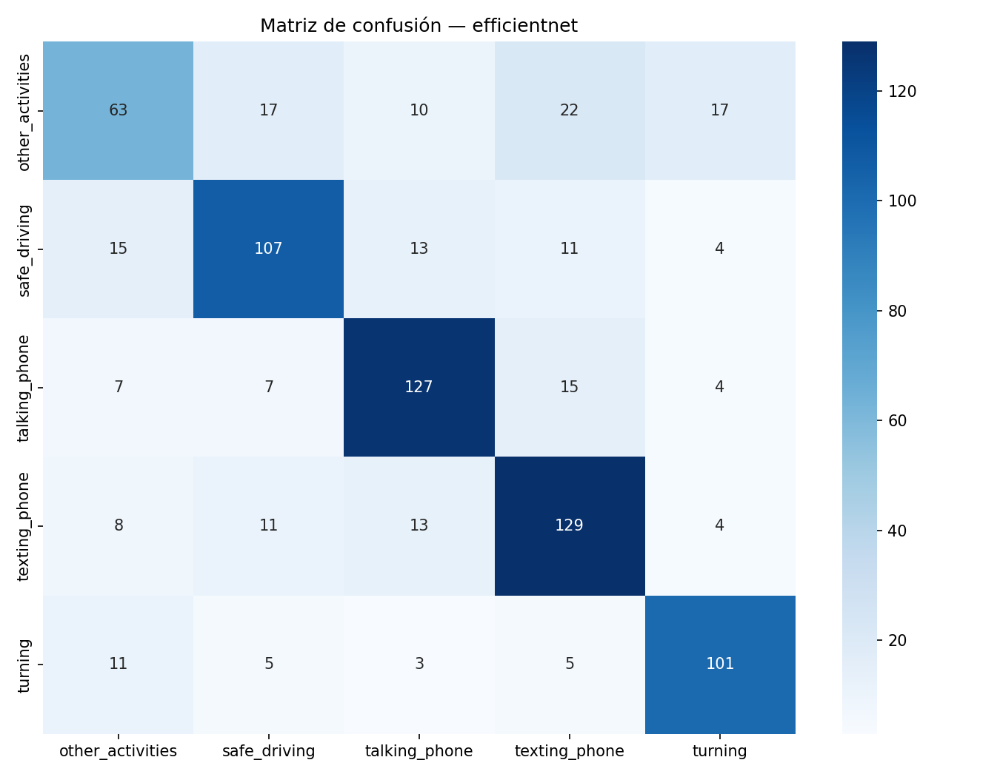
EfficientNet-B0 exhibe la matriz más dispersa de los tres modelos, coherente con ser el de menor accuracy global. La clase other_activities es la más afectada: solo 63 de 129 casos reales se clasifican correctamente (recall ≈49%), repartiéndose el resto entre las cuatro clases restantes casi por igual (10–22 casos cada una). Incluso las clases de mayor relevancia para seguridad vial pierden precisión: talking_phone tiene 7+7+15+4 = 33 errores hacia otras clases, y texting_phone 8+11+13+4 = 36. Esta falta de especialización confirma, a nivel de matriz completa, que congelar toda la red base sin ningún fine-tuning es insuficiente para este dominio cuando el backbone es tan compacto como EfficientNet-B0.
Para comprender las limitaciones reales del clasificador desplegado más allá de las métricas agregadas, se analizaron individualmente las predicciones de ResNet50 sobre el conjunto de prueba, contrastando ejemplos correctamente clasificados con los errores cometidos.
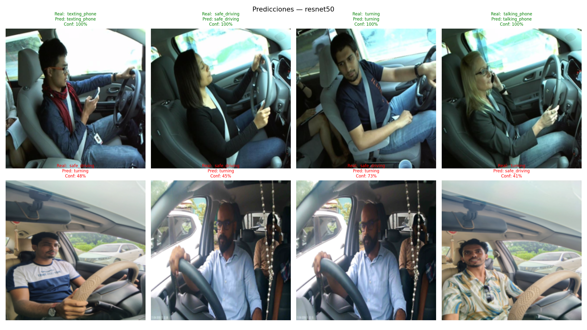
Fila superior (verde): predicciones correctas con alta confianza. Fila inferior (rojo): casos de desacierto del modelo.
En los ejemplos correctamente clasificados (fila superior), el modelo alcanza confianzas
cercanas al 100% incluso en posturas con oclusión parcial de las manos, como
texting_phone con el teléfono sostenido a la altura del regazo o
talking_phone con el dispositivo pegado al oído. Esto sugiere que ResNet50
no depende únicamente de la posición de las manos, sino que integra señales contextuales
como la orientación de la cabeza y el ángulo del torso.
Los errores observados corresponden principalmente a confusiones entre safe_driving y turning con confianzas bajas (41%–73%), lo cual indica que el modelo mismo reconoce ambigüedad en vez de fallar con seguridad. Estos casos comparten posturas visualmente similares: manos sobre el volante en posición de giro parcial, que pueden confundirse con una sujeción normal del volante si el ángulo de la cámara no captura claramente la rotación de la cabeza o el torso.
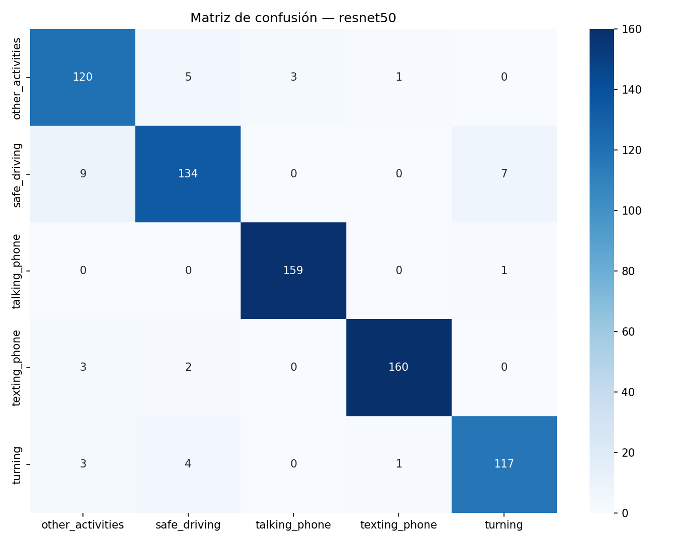
La matriz de confusión confirma que la mayor fuente de error de ResNet50 es la confusión
entre safe_driving y turning (9 casos clasificados como
turning siendo safe_driving, y 7 casos inversos), seguida de una confusión
menor entre safe_driving y other_activities (9 casos).
En contraste, las clases talking_phone y texting_phone —las de
mayor relevancia para seguridad vial— presentan prácticamente cero confusión entre sí
(159/160 y 160/165 aciertos respectivamente), lo que valida al modelo como confiable
específicamente para el objetivo de detectar uso del teléfono al conducir.
Sistema neuronal híbrido que combina el perfil del usuario con características de destinos para sugerir experiencias de viaje relevantes en cascada: categorías → destinos.
5,456 usuarios con valoraciones en 24 categorías turísticas (Google Reviews, destinos europeos). Fuente primaria para el perfil de usuario.
2,000 destinos mundiales con tipo, rating promedio, costo diario, país y otras características. Fuente de ítems para la recomendación final.
Antes de definir el umbral de clasificación y la estrategia de balanceo, se caracterizó estadísticamente el comportamiento de calificación de los 5,456 usuarios sobre las 24 categorías, generando 130,944 interacciones totales (24 interacciones por usuario en promedio).
La distribución general de calificaciones (0–5) presenta una forma bimodal marcada, con un pico concentrado entre 0 y 1 (≈14,000 interacciones) y un segundo pico en el valor máximo cercano a 5 (≈13,000 interacciones), con una zona intermedia comparativamente vacía. Esto revela que los usuarios de Google Reviews califican de forma polarizada: registran mayoritariamente experiencias extremas (muy negativas o muy positivas) y rara vez valoraciones neutras. Esta polarización es la justificación empírica directa del umbral de decisión binario en 3.5: al estar los datos naturalmente agrupados en dos extremos, un corte en la zona de baja densidad entre ambos picos separa las clases con un solapamiento mínimo, favoreciendo la tarea de clasificación binaria del MLP.
Aplicando el umbral de 3.5, el dataset resulta severamente desbalanceado: 17.85%
de interacciones positivas (23,384) frente a 82.15% negativas (107,560).
Sin corrección, un modelo trivial que prediga siempre "negativo" alcanzaría 82% de accuracy
sin aprender ningún patrón útil — razón por la cual se introdujo el término
pos_weight en BCEWithLogitsLoss, calculado como la razón entre la
proporción de negativos y positivos del EDA (0.8215 / 0.1785), penalizando más los errores
sobre la clase minoritaria durante el entrenamiento.
El rating promedio por categoría confirma que ninguna categoría individual supera el umbral positivo de 3.5, lo que explica el desbalance a nivel agregado. Las categorías mejor valoradas corresponden a actividades comerciales y de entretenimiento urbano (malls: 3.35, restaurants: 3.13, theatres: 2.96, museums: 2.89, pubs_bars: 2.83), mientras que las peor valoradas corresponden a servicios de bienestar y actividad física (gyms: 0.82, swimming_pools: 0.95, cafes: 0.97). Este patrón indica que el perfil dominante de usuario en el dataset está orientado al turismo cultural y comercial, y motivó que el sistema en cascada priorice el mapeo hacia destinos de tipo City e Historical para la mayoría de perfiles.
La varianza de ratings dentro de cada usuario tiene una media de 2.28 (rango 0.10–4.44) con una distribución aproximadamente uniforme entre 0 y 4, más una acumulación notable en el extremo superior (~480 usuarios con varianza cercana a 4.4). Esto confirma que existe suficiente heterogeneidad de preferencias entre usuarios para que el modelo pueda personalizar: los usuarios de varianza alta tienen preferencias muy marcadas y son más fáciles de recomendar, mientras que los de varianza baja (<0.5) presentan perfiles homogéneos que dificultan la diferenciación — una limitación que se retoma en la sección de áreas de mejora del reporte.
La bimodalidad de los ratings justifica el umbral de 3.5 como frontera de decisión;
el desbalance 17.85%/82.15% justifica el uso de pos_weight en la función de
pérdida; y la varianza media de 2.28 confirma que el dataset tiene la diversidad de
preferencias necesaria para que un modelo de deep learning aprenda patrones de
personalización reales, en contraste con el dataset original descartado
(amanmehra23/travel-recommendation-dataset), que carecía de esta variabilidad.
El modelo recibe como entrada la concatenación del vector de perfil del usuario (24 dimensiones de valoraciones categóricas) con el One-Hot de la categoría a predecir (24 dimensiones), formando un vector de entrada de 48 dimensiones.
El parámetro pos_weight=4.6 en la función de pérdida compensa el desbalance natural
entre interacciones positivas (viajes realizados) y negativas implícitas. El umbral de decisión
final se ajustó a 0.6 para maximizar el F1-score.
Perfil
del usuario
MLP
predice 24 categorías
Top-K
categorías preferidas
Mapeo
a tipos de destino
Top-K destinos
por rating y tipo
| Perfil de Usuario | Categorías Detectadas | Destinos Recomendados (Top-3) | País / Costo Prom. |
|---|---|---|---|
| Alto interés en playas | Beach, Resort | Grand Ruins, Serene Falls, Crystal Park | Vietnam · Canada · Australia |
| Viajero de aventura | Adventure, Nature | Mountain Trek, Jungle Safari, Waterfall Camp | Nepal · Costa Rica · Brasil |
| Turismo cultural | Historical, Religious | Ancient Temple, Old City, Heritage Fort | India · Japón · Turquía |
El Recall de 0.9955 garantiza que el sistema captura prácticamente todos los destinos que el usuario encontraría relevantes (muy bajo número de falsos negativos). El alto F1 equilibrado confirma que las recomendaciones son tanto precisas como exhaustivas, lo cual es crítico para la satisfacción del usuario.
Se desarrolló una aplicación web funcional que integra los tres módulos del sistema en una interfaz unificada, permitiendo interactuar con los modelos entrenados en tiempo real sin necesidad de conocimientos técnicos.
El servidor está construido sobre FastAPI, un framework Python de alto rendimiento para APIs REST. Expone tres endpoints principales que conectan directamente con los modelos entrenados (ResNet50, LSTM y HybridRecommender), con soporte automático de CORS para comunicación con el frontend.
El frontend es servido directamente por FastAPI mediante StaticFiles,
eliminando la necesidad de un servidor web separado. La interfaz consume los endpoints
REST del backend para visualizar predicciones, clasificaciones y recomendaciones
en tiempo real.
El usuario selecciona un país (22 disponibles) y un mes. El sistema genera una predicción de 30 días para los tres tipos de vehículo (luxury bus, tourist van, train express), visualizada en gráficos interactivos. Si TensorFlow no está disponible, activa automáticamente un modo de simulación.
El usuario sube una imagen desde su dispositivo. El backend la procesa con ResNet50 (redimensionada a 224×224, normalizada con medias ImageNet) y retorna la clase predicha, su probabilidad y las probabilidades de las 5 clases en formato JSON.
El usuario ingresa sus valoraciones en las 24 categorías turísticas. El modelo HybridRecommender predice afinidad por categoría y las cruza con los perfiles de 22 países mediante producto punto, retornando un ranking de destinos ordenados por score de compatibilidad.
Usuario
interactúa con la interfaz
Frontend
envía request REST
FastAPI
procesa y valida
Modelo
LSTM / ResNet / MLP
Respuesta JSON
visualizada al usuario
Los modelos PyTorch detectan automáticamente disponibilidad de CUDA
(torch.device("cuda" if torch.cuda.is_available() else "cpu")),
garantizando que la aplicación funcione tanto en servidores con GPU como
en entornos locales sin aceleración.
Si TensorFlow o el scaler no pueden cargarse, el endpoint
/api/predict_demand activa automáticamente un generador de
simulación estadística con patrones realistas de fin de semana, garantizando
que la interfaz siempre sea funcional.
Se definieron manualmente 22 perfiles de país, cada uno con pesos de afinidad para las 24 categorías turísticas, basados en características culturales y turísticas reales de cada destino. Este conocimiento experto actúa como una capa de filtrado por conocimiento que enriquece las predicciones puramente estadísticas del modelo neuronal.
"Los tres módulos demuestran que el aprendizaje profundo es una herramienta práctica y efectiva para los retos operativos del transporte moderno, con métricas que superan consistentemente las líneas base clásicas."
| Módulo | Técnica | Métrica Principal | Resultado | Mejora vs Baseline |
|---|---|---|---|---|
| 1 — Predicción | LSTM Multivariada | MAE (pasajeros) | 15.79 | 148.6% vs Regresión Lineal |
| 2 — Clasificación | ResNet50 + Fine-Tuning | Accuracy / AUC-ROC | 94.7% / 0.9972 | +20.5pp vs MobileNetV2 |
| 3 — Recomendación | MLP Híbrido | F1-Score | 0.9871 | Superior a CF colaborativo puro |
El proyecto demuestra que el aprendizaje profundo, aplicado con criterio metodológico sólido, puede transformar tres áreas críticas de una empresa de transporte con resultados altamente competitivos en todos los módulos.
La ventana temporal de 14 días con LSTM multivariada reduce el error de predicción un 78.7% respecto a la regresión lineal. El MAPE del 8.92% es operativamente aceptable para planificación de flota con 30 días de anticipación.
ResNet50 con fine-tuning de layer4 alcanza 94.7% de accuracy con AUC-ROC de 0.9972, lo cual justifica su despliegue en sistemas de monitoreo de conductores en tiempo real para flotas de transporte.
El sistema híbrido con F1 de 0.9871 y cascada categoría→destino ofrece recomendaciones explicables y personalizadas, con potencial directo de impacto en retención de usuarios y demanda de rutas específicas.
El sistema de clasificación de conductores no debe usarse como instrumento de control punitivo sin supervisión humana. Las alertas deben ser herramientas de apoyo, no de vigilancia, y las decisiones disciplinarias deben contar siempre con revisión humana de los registros.